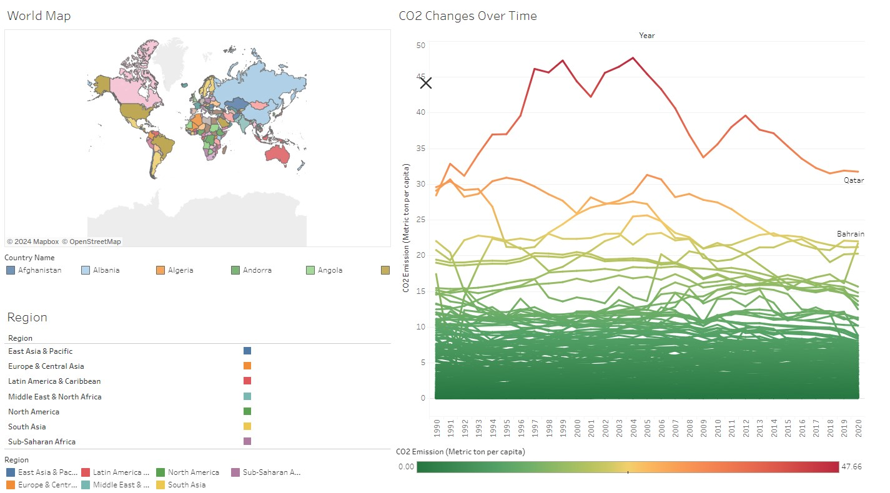

Per capita CO2 emissions vary significantly across countries, reflecting differences in industrial activities, energy consumption, and population sizes. Qatar has the highest per capita emissions, exceeding 30 metric tons per person annually due to its oil and gas industry. Similarly, Kuwait and the United Arab Emirates have high per capita emissions, around 25 and 20 metric tons respectively.
In developed countries, the United States stands out with about 15 metric tons per person each year, driven by substantial energy use across various sectors. China, while being the largest overall emitter, has per capita emissions of around 7 metric tons, reflecting its vast population.
European countries like Germany and the United Kingdom have lower per capita emissions, around 9 and 5 metric tons per person respectively. India's per capita emissions are much lower at about 2 metric tons, due to its large population and lower industrialization level.
These figures highlight the need for diverse and tailored approaches in addressing global CO2 reduction efforts, considering both total and per capita emissions.